실습 1. godot 엔진을 이용한 digital twin 개발
godot 엔진 설치
URL: https://godotengine.org/download/windows
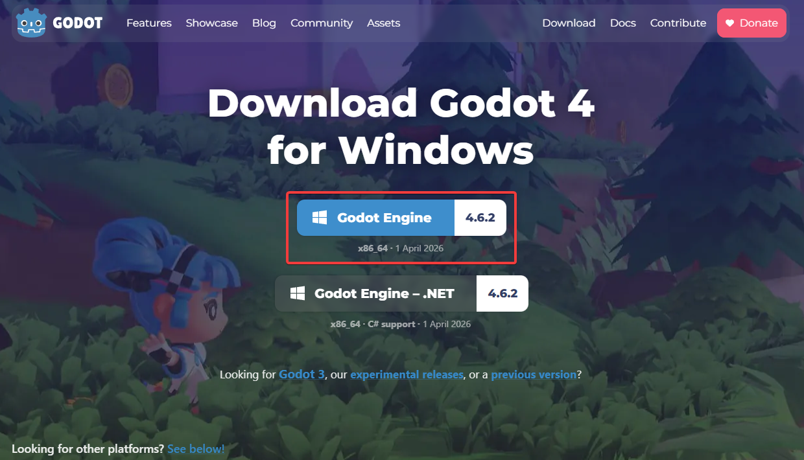
위와 같이 "Godot Engine"을 클릭해 설치파일을 다운로드받아 설치한다.
godot 엔진 프로젝트 생성
godot 엔진을 실행한다.
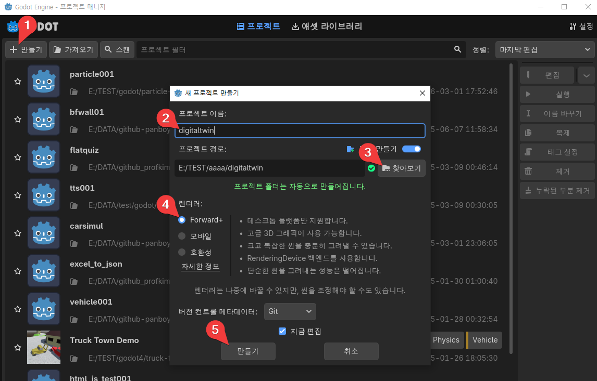
-
"만들기" 버튼을 클릭한다.
-
"새 프로젝트 만들기" 창에서 프로젝트 이름을 "digitaltwin"으로 한다.
-
"찾아보기" 버튼을 눌러 프로젝트 경로를 설정한다.
-
렌더러를 "Forward+"로 한다.
-
"만들기" 버튼을 클릭한다.
godot 엔진에 fbx 파일 추가
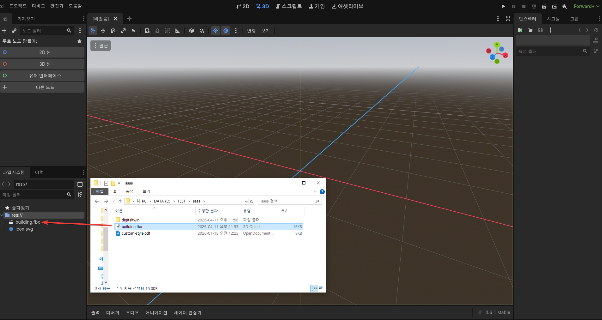
탐색기의 building.fbx 파일을 끌어다 godot 엔진의 res 아래에 끌어 놓는다(Drag and Drop).
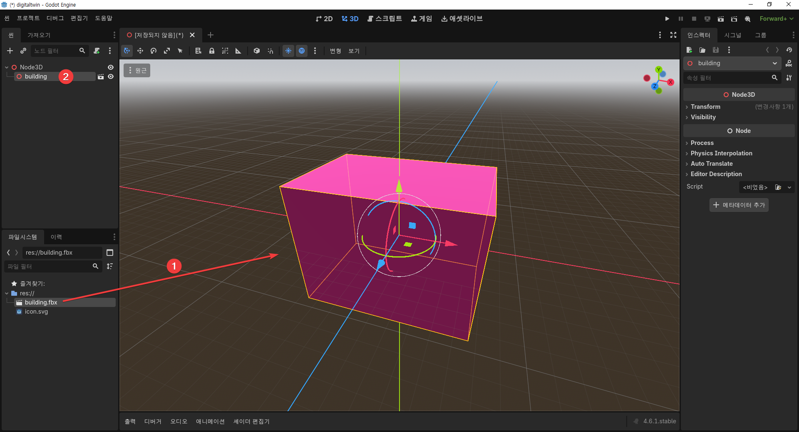
-
res:// 밑의 building.fbx를 오른쪽 3D 공간 안에 끌어다 놓는다(drag and drop).
-
Node 3D 아래에 "Building"이 추가된 것을 확인한다. 3D 공간 안에 빌딩이 생긴다.
카메라 추가
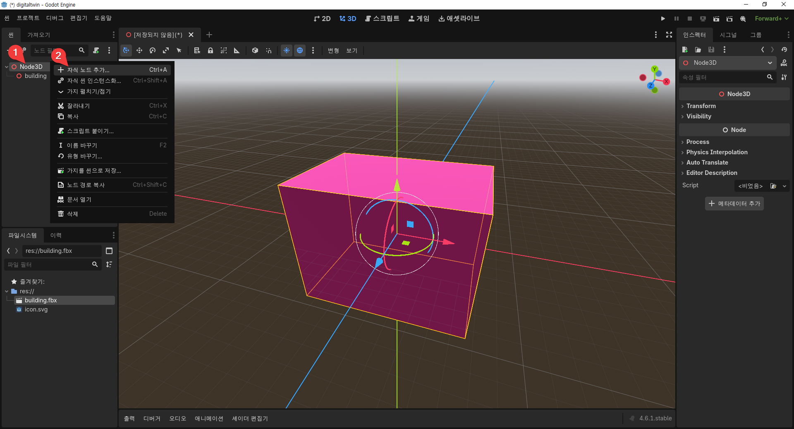
-
Node 3D를 오른쪽으로 클릭한다.
-
"자식 노드 추가"를 누른다.
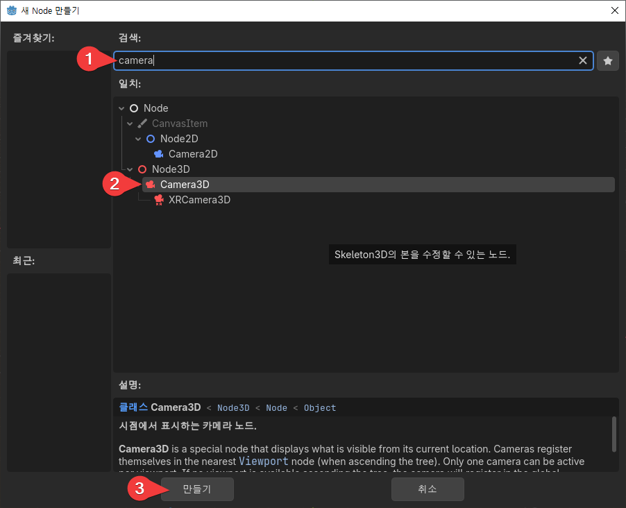
-
"camera"를 검색한다.
-
"Camera3D"를 선택한다.
-
"만들기" 버튼을 클릭한다.
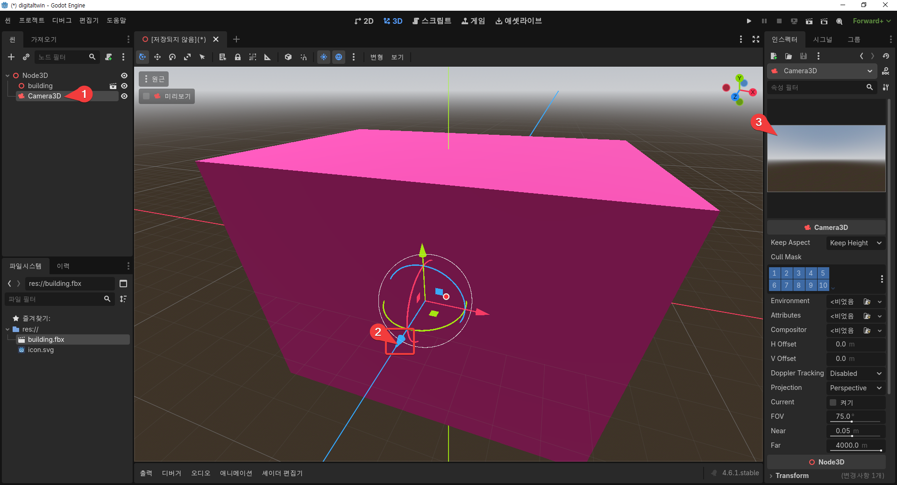
-
"카메라"를 선택한다.
-
카메라의 파란색 화살표를 마우스로 누른 채로 마우스를 아래로 내린다. 카메라가 뒤쪽으로 이동한다.
-
카메라가 이동하는 정도를 확인한다. 더 많이 뒤로 이동해야 하면 마우스휠을 아래 방향으로 돌려 줌 아웃을 한 후에 이동시킨다.
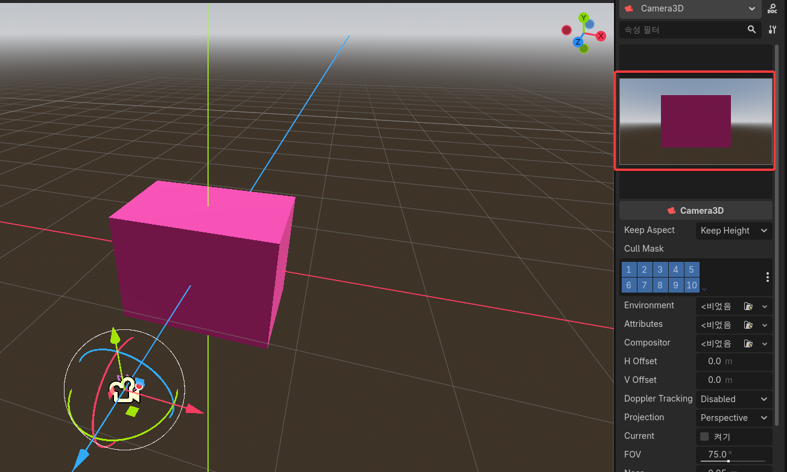
카메라 모니터를 보며 충분히 카메라 안에 보이도록 이동시킨다.
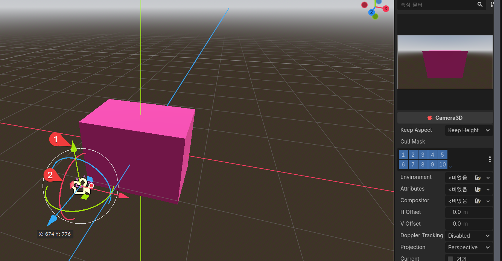
-
카메라의 초록색 화살표를 잡고(누른 채로) 위로 올린다. 카메라가 위로 올라간다.
-
카메라의 빨간색 원을 잡고(누른 채로) 위로 올린다. 카메라가 아래쪽으로 회전한다.
카메라 모니터를 보며 위에서 아래로 내려보는 느낌으로 설정한다.
프로그램 실행하기
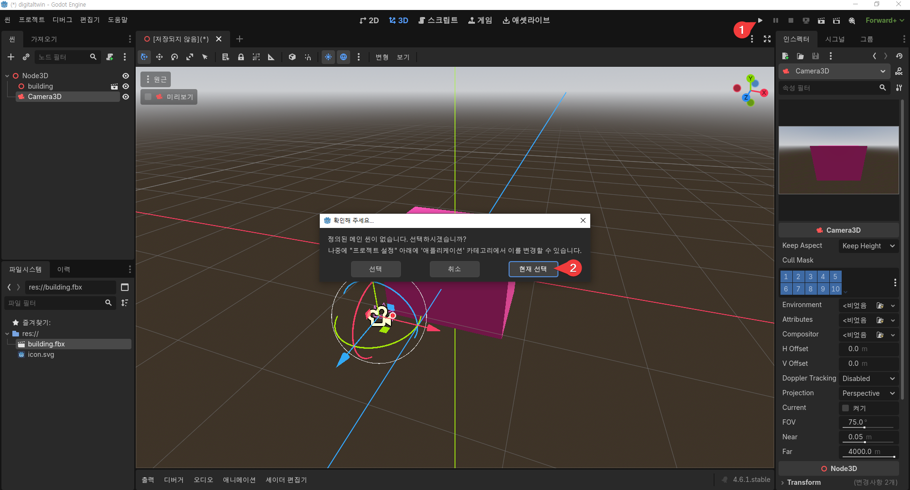
-
실행 버튼을 누른다.
-
메인 씬을 선택하라는 창이 나오면 "현재 선택" 버튼을 누른다.
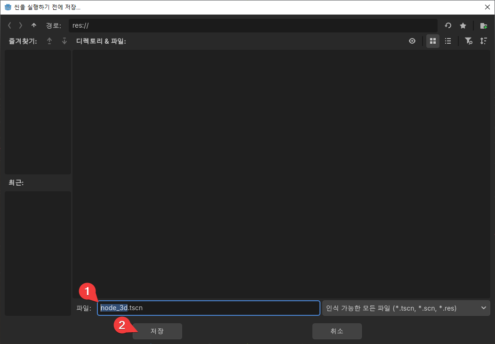
-
빌딩과 카메라를 추가한 현재 씬을 먼저 저장해야 한다. 파일명을 정해준다.
-
"저장" 버튼을 누른다.
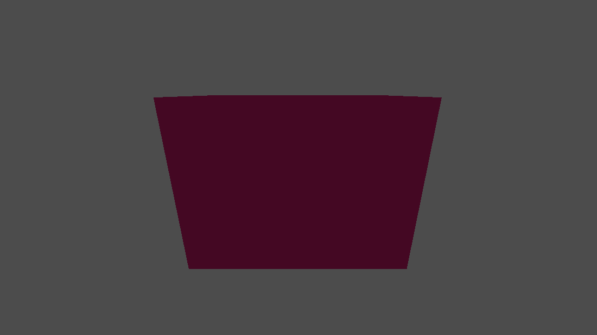
건물이 포함된 프로그램이 실행된다.